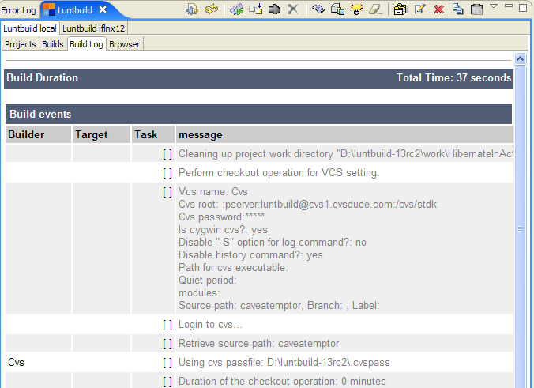

You can display a build log, revision log, or system log by selecting a build in Projects tab or Builds tab and clicking on appropriate toolbar button or select menu item from toolbar menu or popup menu.
When you display a build log of the currently running build, the build log will get refreshed and scrolled to the bottom of the log with twice the frequency set for the current Luntbuild connection.
